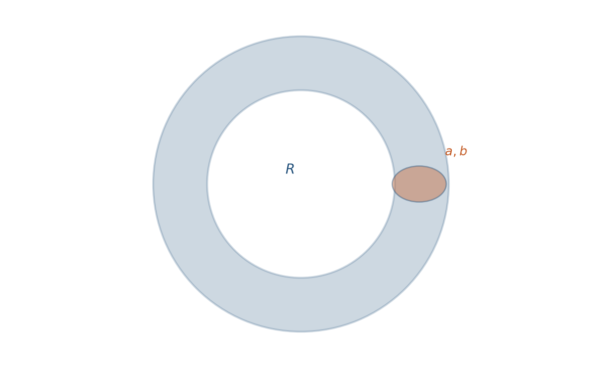
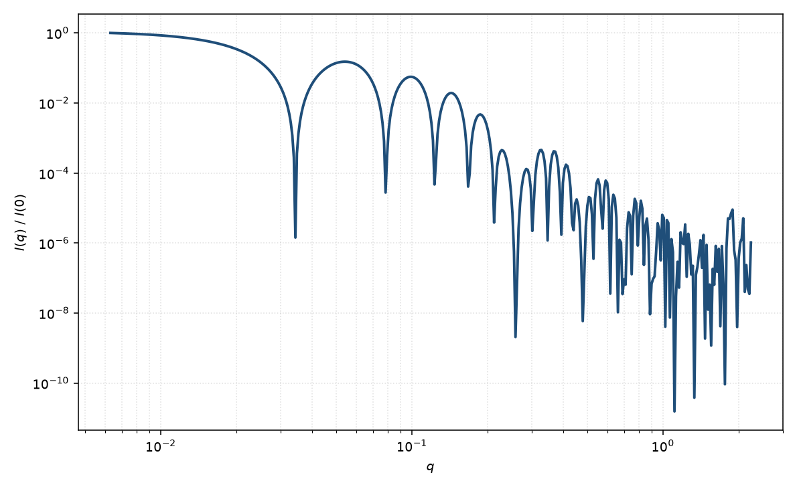

椭圆环壳
elliptical torus shell
适用场景
椭圆环壳是主半径 $R$ 的圆环，管截面为椭圆半轴 $a$、$b$ 的壳层（可退化到实心椭圆截面环）。适用于纳米环、环形胶束、以及空心管被弯成闭合环的样品。
低 $q$ 的 $R_g$ 由环的主半径主导；中等 $q$ 出现与 $R$ 相关的环状振荡；高 $q$ 由管截面 $a$、$b$ 决定。开口直管应使用空心圆柱，不要把缺口环硬拟合成闭合环面。
物理图像
Kawaguchi 在柱坐标下给出圆环及其变体（椭圆截面、管状环、堆叠环）的回转半径与散射函数，曲线由对截面与环方位的数值积分得到。壳层意味着截面是空心椭圆环，内壁衬度接近溶剂。
相对空心直圆柱，闭合拓扑把轴向 $\mathrm{sinc}$ 换成环的 $J_0(qR\sin\alpha)$ 类因子，低 $q$ 不再是细长棒的 $q^{-1}$。
示意图


核心公式
均匀圆截面环的示意振幅含 $J_0(q R\sin\alpha)$ 与截面 $2J_1(qr)/(qr)$。椭圆截面把 $r$ 换成 $R_{\mathrm{eff}}(\psi)$；壳层再对外内截面振幅相减：
$$A(q,\alpha,\psi)\propto J_0(q R\sin\alpha)\bigl[V_{\mathrm{out}}\Phi_{\mathrm{cs}}(q,a_{\mathrm{out}},b_{\mathrm{out}},\psi)-V_{\mathrm{in}}\Phi_{\mathrm{cs}}(q,a_{\mathrm{in}},b_{\mathrm{in}},\psi)\bigr],$$ $$P(q)=\bigl\langle|A|^2\bigr\rangle_{\alpha,\psi}.$$回转半径（圆截面实心环）$R_g^2=R^2+5r^2/4$；椭圆与壳层须按 Kawaguchi 的对应式修正。
参数表
| 参数 | 符号 | 含义 | 单位 | 典型范围 |
|---|---|---|---|---|
| 主半径 | $R$ | 环中心线半径 | Å | 50–2000 Å |
| 截面半轴 | $a$, $b$ | 管截面外轮廓 | Å | 5–80 Å |
| 壳厚 | $t$ | 管壁厚度（壳层） | Å | 小于 $\min(a,b)$ |
| 取向角 | $\theta,\phi$ | 环法向（二维） | 度 | 粉末或基底平躺 |
| 衬度 | $\Delta\rho$ | 壁相对溶剂 SLD 差 | Å$^{-2}$ | 由组成计算 |
拟合注意
$R$ 与截面尺寸在只有 Guinier 时相关。要分开它们需要看到环振荡与截面 Porod。壳厚与壁衬度简并，同空心圆柱。
多分散：主半径分布强烈抹平环振荡；截面多分散抹平高 $q$。取向：平躺在基底上的环给出二维各向异性；溶液中粉末平均。不要把环的 $J_0$ 峰当成堆叠层间距。
磁性：磁环的磁矩可沿环（涡流）或沿法向，磁形式因子与核通道几何相同但取向因子不同，须单独磁 SLD。
相近模型
参考文献
- Kawaguchi, T. Radii of gyration and scattering functions of a torus and its derivatives. J. Appl. Cryst. 2001, 34, 580–584. DOI: 10.1107/S0021889801009517